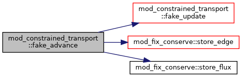
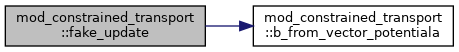
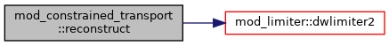

Functions/Subroutines | |
| subroutine | recalculateb |
| re-calculate the magnetic field from the vector potential in a completely divergency free way More... | |
| subroutine | fake_advance (igrid, idimLIM, s) |
| fake advance a step to calculate magnetic field More... | |
| subroutine | fake_update (ixIL, s, fC, fE, dxD) |
| fake update magnetic field from vector potential More... | |
| subroutine | b_from_vector_potentiala (ixIsL, ixIL, ixOL, ws, x, A) |
| calculate magnetic field from vector potential A at cell edges More... | |
| subroutine | reconstruct (ixIL, ixCL, idir, q, qL, qR) |
| Reconstruct scalar q within ixO^L to 1/2 dx in direction idir Return both left and right reconstructed values. More... | |
Function/Subroutine Documentation
◆ b_from_vector_potentiala()
| subroutine mod_constrained_transport::b_from_vector_potentiala | ( | integer, intent(in) | ixIs, |
| integer, intent(in) | L, | ||
| integer, intent(in) | ixI, | ||
| L, | |||
| integer, intent(in) | ixO, | ||
| L, | |||
| double precision, dimension(ixis^s,1:nws), intent(inout) | ws, | ||
| double precision, dimension(ixi^s,1:ndim), intent(in) | x, | ||
| double precision, dimension(ixis^s,1:3), intent(inout) | A | ||
| ) |
calculate magnetic field from vector potential A at cell edges
Definition at line 103 of file mod_constrained_transport.t.
◆ fake_advance()
| subroutine mod_constrained_transport::fake_advance | ( | integer | igrid, |
| integer | idim, | ||
| integer | LIM, | ||
| type(state) | s | ||
| ) |
fake advance a step to calculate magnetic field
Definition at line 50 of file mod_constrained_transport.t.
Here is the call graph for this function:

◆ fake_update()
| subroutine mod_constrained_transport::fake_update | ( | integer | ixI, |
| integer | L, | ||
| type(state) | s, | ||
| double precision, dimension(ixi^s,1:nwflux,1:ndim) | fC, | ||
| double precision, dimension(ixi^s,7-2*ndim:3) | fE, | ||
| double precision | dx, | ||
| double precision | D | ||
| ) |
fake update magnetic field from vector potential
Definition at line 71 of file mod_constrained_transport.t.
Here is the call graph for this function:

◆ recalculateb()
| subroutine mod_constrained_transport::recalculateb |
re-calculate the magnetic field from the vector potential in a completely divergency free way
Definition at line 8 of file mod_constrained_transport.t.
Here is the call graph for this function:
◆ reconstruct()
| subroutine mod_constrained_transport::reconstruct | ( | integer, intent(in) | ixI, |
| integer, intent(in) | L, | ||
| integer, intent(in) | ixC, | ||
| L, | |||
| integer, intent(in) | idir, | ||
| double precision, dimension(ixi^s), intent(in) | q, | ||
| double precision, dimension(ixi^s), intent(out) | qL, | ||
| double precision, dimension(ixi^s), intent(out) | qR | ||
| ) |
Reconstruct scalar q within ixO^L to 1/2 dx in direction idir Return both left and right reconstructed values.
Definition at line 177 of file mod_constrained_transport.t.
Here is the call graph for this function:
